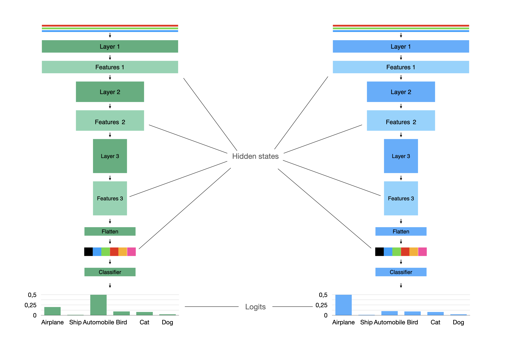
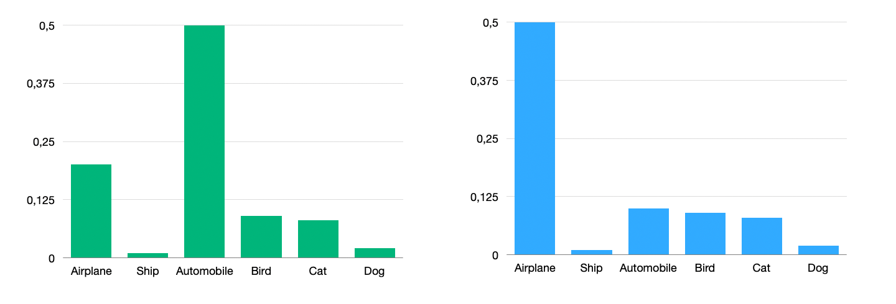
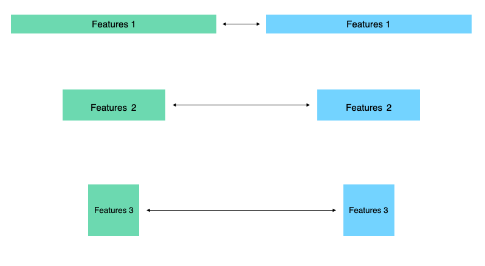

Distillation¶
Philosophy and main idea¶
Method proposed in Distilling the Knowledge in a Neural Network paper. We can train one teacher model for a task and then transfer knoweledge to the other student network. In classical approach teacher is a big and slow network and student is a smaller model and we need student to perform as better as a teacher.
Let’s take a look on the simple image classification example:
The most simple way is to look on the probability distribution of the teacher model and the student model and force student to produce same distribution as a teacher.
The most common way to measure difference between distribution called KL-divergence.
You can use KLDivLoss for applying this loss. It tooks student’s and teacher’s logits.
-
class
compressors.distillation.losses._kl_loss.KLDivLoss(temperature: float = 1.0)¶
Or just add KLDivCallback to DistilRunner if you are using Catalyst.
-
class
compressors.distillation.callbacks.KLDivCallback(output_key: str = 'kl_div_loss', temperature: float = 1.0, student_logits_key: str = 's_logits', teacher_logits_key: str = 't_logits')¶
We also can add difference between hidden states.
For example we can use \(L_2\)-norm for this vectors with MSEHiddenStatesLoss
-
class
compressors.distillation.losses.MSEHiddenStatesLoss(normalize: bool = False, need_mapping: bool = False, teacher_hidden_state_dim: Optional[int] = None, student_hidden_state_dim: Optional[int] = None, num_layers: Optional[int] = None)¶
or callback
-
class
compressors.distillation.callbacks.MSEHiddenStatesCallback(output_key: str = 'mse_loss', normalize: bool = False, need_mapping: bool = False, teacher_hidden_state_dim: Optional[int] = None, student_hidden_state_dim: Optional[int] = None, num_layers: Optional[int] = None)¶ MSE loss aka Hint loss for difference between hidden states of teacher and student model.
- Parameters
output_key – name for loss. Defaults to mse_loss.
But we can have not only vectors in hidden states. We can also have tensors like here with shapes \((C\times H\times W)\).
You can also apply \(L_2\)-norm here, but experiments shows that you can use something more complex like Attention Transfer.
In compressors this method implemented in
-
class
compressors.distillation.losses.AttentionLoss(p: int = 2)¶
and
-
class
compressors.distillation.callbacks.AttentionHiddenStatesCallback(output_key: str = 'attention_loss', exclude_first_and_last: bool = True, p: int = 2)¶ - Parameters
output_key – name for loss. Defaults to attention_loss.
exclude_first_and_last – If set to True doesn’t take first and last hidden states. Usually attention loss applied in this way. Defaults to True.